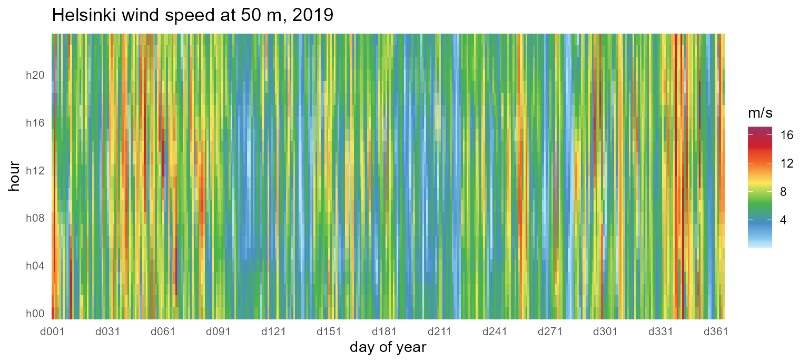
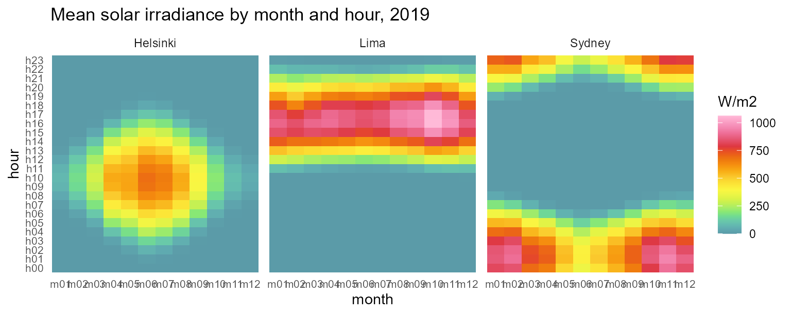
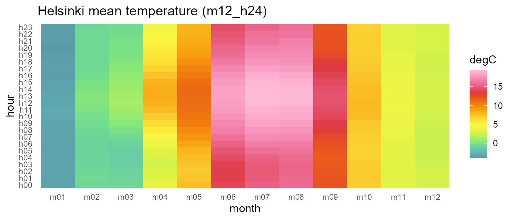
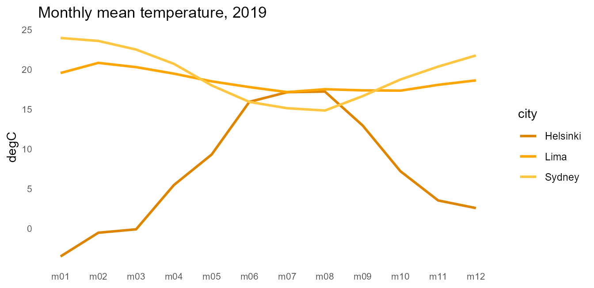

The sample
merra2_cities ships three contrasting hourly weather
series for 2019 — Helsinki (high latitude), Lima (equatorial), Sydney
(southern hemisphere) — extracted from NASA’s MERRA-2 reanalysis:
str(merra2_cities)
#> 'data.frame': 26280 obs. of 5 variables:
#> $ city : chr "Helsinki" "Helsinki" "Helsinki" "Helsinki" ...
#> $ datetime: POSIXct, format: "2019-01-01 00:30:00" "2019-01-01 01:30:00" ...
#> $ T10M : num 1 2 2 3 3 3 3 3 3 3 ...
#> $ W50M : num 14 12.6 11.5 11 10.8 ...
#> $ SWGDN : num 0 0 0 0 0 0 0 0 2 13 ...Instants are stamped at 30 minutes past the hour (the MERRA-2
hourly-mean convention); instant_to_timeslice() floors them
into hourly timeslices, so no preprocessing is needed.
Datetime data on a calendar
geom_calendar() cuts a datetime column to timeslices and
aggregates into tiles. Helsinki wind on the full-resolution
d365_h24 calendar, with energypal’s Global Wind Atlas
ramp:
hel <- subset(merra2_cities, city == "Helsinki")
ggplot(hel) +
geom_calendar(calendar = calendars$d365_h24,
datetime = "datetime", z = "W50M") +
energypal::scale_fill_energy_c(palette = "windatlas") +
scale_x_discrete(breaks = sprintf("d%03d", seq(1, 365, by = 30))) +
scale_y_discrete(breaks = sprintf("h%02d", seq(0, 23, by = 4))) +
labs(x = "day of year", y = "hour", fill = "m/s",
title = "Helsinki wind speed at 50 m, 2019") +
theme_calendar()
The representative-day view compresses the same year into
m12_h24 (month x hour), and the by= argument
carries the city column through aggregation so facets work.
Times are UTC, so each city’s solar noon sits at its longitude’s offset
(Lima ~16h, Sydney ~01h — a calendar with
utc_offset_minutes shifts this to local time):
ggplot(merra2_cities) +
geom_calendar(calendar = calendars$m12_h24,
datetime = "datetime", z = "SWGDN", by = "city") +
facet_wrap(~city) +
energypal::scale_fill_energy_c(palette = "solaratlas_ghi") +
labs(x = "month", y = "hour", fill = "W/m2",
title = "Mean solar irradiance by month and hour, 2019") +
theme_calendar()
Timeslice-keyed data
Once data lives on timeslices, geom_calendar_tile()
draws it directly, and join_calendar() attaches timeframe
columns for manual workflows:
cal <- calendars$m12_h24
hel$timeslice <- instant_to_timeslice(hel$datetime, cal)
hel_timeslices <- aggregate(T10M ~ timeslice, data = hel, FUN = mean)
ggplot(hel_timeslices) +
geom_calendar_tile(calendar = cal, z = "T10M") +
scale_fill_gradientn(colours = energypal::energypal("solaratlas_ghi")) +
labs(x = "month", y = "hour", fill = "degC",
title = "Helsinki mean temperature (m12_h24)") +
theme_calendar()
(energypal deliberately ships no temperature palette; the solar-atlas ramp is borrowed here and labeled as such.)
Recasting across calendars
Timeslice-keyed panels recast between any two calendars, and
identifier columns like city are preserved as grouping
columns — the same mechanics that let mixed pipelines chain
x |> recast_calendar(...) |> geo_recast(...).
Aggregate all three cities onto m12_h24, then move the
panel across resolutions:
all3 <- merra2_cities
all3$timeslice <- instant_to_timeslice(all3$datetime, cal)
panel <- aggregate(cbind(T10M, W50M) ~ city + timeslice, data = all3,
FUN = mean)
# month x hour -> quarter x hourtype (cross-cutting hierarchies)
q_hp <- recast_calendar(panel, cal, calendars$q4_hp3, year = 2019)
head(q_hp, 6)
#> timeslice city T10M W50M
#> 1 Q1_DAY Helsinki -1.138889 7.495926
#> 2 Q2_DAY Helsinki 11.371795 5.333059
#> 3 Q3_DAY Helsinki 16.717391 5.346830
#> 4 Q4_DAY Helsinki 4.586051 7.106793
#> 5 Q1_NIGHT Helsinki -1.723611 7.328056
#> 6 Q2_NIGHT Helsinki 8.390110 5.440247
# ... and to the seasonal view
seasonal <- recast_calendar(panel, cal, calendars$s4, year = 2019)
seasonal[seasonal$city == "Helsinki", ]
#> timeslice city T10M W50M
#> 1 WIN Helsinki -0.4689815 7.659907
#> 2 SPR Helsinki 4.8949275 5.947328
#> 3 SUM Helsinki 16.7771739 5.337862
#> 4 FAL Helsinki 7.9001832 6.448352Conservation under rule = "sum" holds per identifier
group. Treating mean irradiance as an extensive proxy (energy per
timeslice), each city’s annual total survives the trip to
"ANNUAL":
irr <- aggregate(SWGDN ~ city + timeslice, data = all3, FUN = sum)
annual <- recast_calendar(irr, cal, to = "ANNUAL", year = 2019,
rule = "sum")
annual
#> timeslice city SWGDN
#> 1 ANNUAL Helsinki 1100819
#> 2 ANNUAL Lima 2352652
#> 3 ANNUAL Sydney 1921049
# identical to summing the timeslice panel directly:
tapply(irr$SWGDN, irr$city, sum)
#> Helsinki Lima Sydney
#> 1100819 2352652 1921049Comparing resolutions
The same temperature series at monthly resolution for all three
cities, with energypal_gradient() spreading one carrier
color into related tones (the levels aren’t energy carriers, so explicit
colors sidestep the label matcher):
m_t <- recast_calendar(panel[c("city", "timeslice", "T10M")], cal,
to = "MONTH", year = 2019)
tones <- energypal::energypal_gradient(
energypal::energypal("carriers")[["Solar"]], n = 3)
ggplot(m_t, aes(timeslice, T10M, color = city, group = city)) +
geom_line(linewidth = 1) +
scale_color_manual(values = unname(tones)) +
labs(x = NULL, y = "degC",
title = "Monthly mean temperature, 2019") +
theme_calendar()